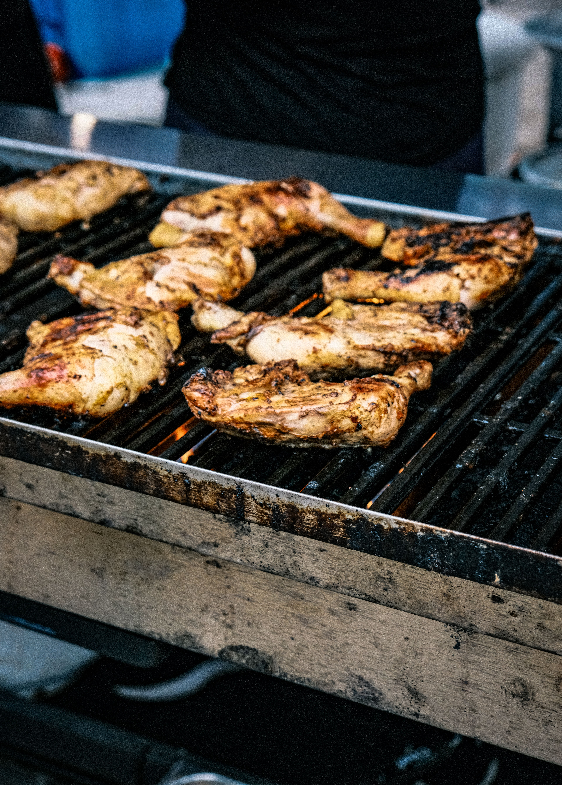

Authentic Nigerian & West African Cuisine
Welcome to Temi's Kitchen, a Cape Town food business bringing traditional Nigerian and West African flavours to Table View. Discover delicious food inspired by authentic West African cuisine in a welcoming setting.
Our Food
Explore a selection of Nigerian and West African dishes, including favourites such as jollof rice, grilled chicken, and other traditional specialities.

Smokey Jollof Rice
Richly seasoned and served with tender grilled chicken.

Suya & Grilled Chicken
Marinated with authentic West African spices and grilled to perfection.

Traditional Specialties
Freshly cooked traditional meals made for dine-in or takeaway.
Why Temi's Kitchen?
- Authentic Nigerian & West African flavours
- A variety of traditional food options
- Food and catering options for different occasions
- Convenient Table View location
Ready to Discover the Flavours of West Africa?
📍 Shop 6, 1 Dianthus Road, Table View, Cape Town